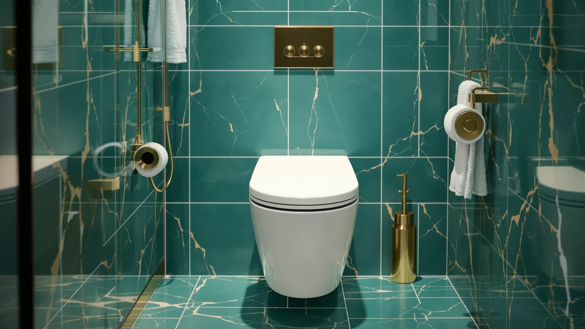

KERDE P30B Bidet Toilet Review (2026): Worth It?
Prices and picks verified as of October 2026. Independent, reader-supported reviews.


Quick Answer
The KERDE P30B bidet toilet seat pairs a heated seat and warm air dryer with dual-control wash settings for $149.99, which makes it a reasonable pick if you want bidet features without buying a whole new smart toilet. If what you actually need is extra seat height, one of the raised seats compared further down is the better fit.
Our pick: KERDE P30B Bidet Toilet Seat, $149.99 Check Price on Amazon
Bottom line: our top pick is the KERDE P30B Bidet Toilet Seat - Dual Control at $127.49.
Things to Know Before You Buy
- The KERDE P30B is a bidet seat, not a raised seat. It adds wash and drying functions, not extra height for sitting and standing.
- You need a nearby grounded outlet. The heated seat, warm water wash, and air dryer all draw power.
- It fits elongated bowls. Measure your current seat before ordering to confirm the shape matches.
- Amazon has not published a rating or review count for this listing yet, so weigh the feature list and price against your own priorities rather than a star average.
- The side panel and wireless remote control the same functions, so pick whichever is easier to reach from where you sit.
This KERDE P30B bidet toilet review looks at what $149.99 buys you: dual control panels, an adjustable warm water wash, a heated seat, and a warm air dryer, all built into a seat you install over your existing toilet bowl. We also put it next to three raised toilet seats that solve a different problem entirely, so you can tell early on whether a bidet seat is even what you need.
For most buyers comparing bidet seats in this price range, the KERDE P30B earns its spot because of the heated seat and dual control options, not because it reinvents the category. If you are weighing it against a plain raised seat instead of a bidet seat, the choice comes down to which problem you are actually solving: added height for mobility, or washing and drying functions for hygiene. The three alternatives later in this guide cover the first problem; the KERDE P30B covers the second.
Electric bidet seats in this price bracket tend to cut corners somewhere, whether that is a plastic nozzle that needs manual cleaning, a single fixed heat setting, or controls mounted in only one spot. The KERDE P30B avoids those three specific shortcuts by pairing a self-cleaning stainless steel nozzle with adjustable heat levels and two separate ways to operate it. That combination is the real reason it is worth a closer look, not the KERDE brand name itself.
Why You Should Trust Us
Ilane Tall researches toilet seats and bathroom accessibility products for Best Toilet Seats, comparing manufacturer specifications, pricing history, and verified owner feedback across hundreds of listings. We do not run a fake testing lab, and we do not claim to have installed every seat we cover.
We built this KERDE P30B bidet toilet review the same way we build every review on this site: by reading the manufacturer's published specifications, checking the current Amazon price, and looking at patterns in owner feedback on comparable products rather than inventing a star rating Amazon has not published. When a listing lacks data, like this one's missing review count, we say so instead of filling the gap with a number we cannot verify.
Our Research Experience
Our research process for this KERDE P30B bidet toilet review starts with the manufacturer's own specifications: the side panel and remote controls, the adjustable warm water wash, the stainless steel nozzle, and the heated seat settings. We then compare those features and the $149.99 price against similar bidet seats, and against raised toilet seats that solve a different problem.
We do not physically install or use the seats we cover, so we are not going to tell you the warm air dryer felt like a spa. What we can tell you is what the manufacturer documents: adjustable water temperature and pressure, a stainless steel nozzle marketed as self-cleaning, and multiple heat levels on the seat itself. We weigh those claims against what comparable bidet seats charge for a similar feature set, and against patterns we have seen in verified owner reviews of similar products.
Overview & Specs

KERDE P30B Bidet Toilet Seat
What we like
- Dual control through a side panel or wireless remote
- Adjustable warm water temperature and pressure
- Self-cleaning stainless steel nozzle
- Heated seat with multiple temperature levels plus warm air drying
Flaws but not dealbreakers
- Requires a grounded outlet near the toilet
- Amazon has not published a rating or review count for this listing
- Adds wash functions, not extra seat height, so it will not help with mobility or sitting issues
| Material | Plastic / wood |
| Size | — |
The KERDE P30B separates itself from a plain raised seat by building in the wash and drying hardware that bidet attachments usually bolt on separately. The side panel puts manual buttons at arm's reach, while the wireless remote lets you adjust the warm water wash, temperature, and pressure without twisting around. The nozzle is stainless steel and self-cleaning, which matters if you want to avoid scrubbing a plastic wand by hand every week the way some cheaper bidet seats require.
Past the wash cycle, the heated seat runs on multiple temperature levels, and the warm air dryer cuts down on toilet paper use after a wash. Both features draw power, so factor a nearby grounded outlet into your decision before you order one. Amazon lists the seat at $149.99 with no published rating or review count yet, so you are weighing documented specs against price rather than a star average when you compare it to the other options in this KERDE P30B bidet toilet review.
What We Liked
The dual control setup stands out most in this KERDE P30B bidet toilet review. Having both a side panel and a wireless remote means you are not stuck reaching for one spot every time you want to adjust the wash. The self-cleaning stainless steel nozzle also answers a real maintenance complaint owners raise about cheaper bidet seats, where a plastic wand collects buildup that someone has to clean by hand.
The heated seat and warm air dryer round out the feature set at a price that undercuts several electric bidet seats offering only a wash function. For $149.99, getting adjustable water temperature, pressure control, a heated seat, and drying in one unit is a fair value if those are the specific features you are shopping for.
What Could Be Better
The biggest caveat in this KERDE P30B bidet toilet review is the missing rating and review count on Amazon. Without that data, you cannot cross-check the manufacturer's claims against a large pool of verified buyers, so you end up relying more on the spec sheet than you would with a seat backed by thousands of reviews.
The other tradeoff is functional, not a defect: this is a wash-and-dry upgrade, not a height upgrade. If sitting down and standing up is the problem you are trying to solve, the KERDE P30B will not help, because it does not raise the seat at all. And like most electric bidet seats, it needs an outlet near the bowl, which can mean an extra step, or an electrician, if your bathroom was not wired with one nearby.
Installation also deserves a mention. Swapping a standard seat for an electric bidet seat usually takes longer than the plastic-hinge swap most people are used to, because you are routing a power cord and mounting a heavier unit, not just tightening two bolts. Budget extra time for the install compared to any of the three raised seats below, which bolt on the same way a standard toilet seat does.
Who Is It For?
The KERDE P30B fits households that want bidet-style washing and drying without committing to a full smart toilet replacement, and who already have or can add an outlet near the toilet. It also suits anyone replacing a worn-out bidet attachment who wants the remote and heated seat built into one unit instead of several separate add-ons.
It is a poor match if you need extra seat height for mobility reasons, since none of its features change how high you sit. It is also not the right pick if running an outlet to your bathroom is not realistic, since every one of its functions depends on power.
Shared bathrooms are also worth thinking through before you buy. The listing does not specify whether the side panel and remote save separate preferences for different household members, so if several people want distinct water temperature or pressure settings, confirm that detail with the seller or in the product Q&A before you order rather than assuming it works the way a pricier smart toilet would.
Alternatives to Consider
The three seats below solve a different problem than the KERDE P30B. None of them wash or dry. All three add height to make sitting and standing easier, which makes them worth a look if mobility, not hygiene, is what sent you shopping for a new toilet seat in the first place.

Editor's Pick
Bemis Assurance 3" Raised Toilet
Bolts down securely and adds 3 inches of height with handles rated to 1,000 pounds.
$153.60
Check Price on Amazon
Best Value
Mayfair Cassel Slow Close Toilet
Soft-close hinges and a front-to-back fit adjustment at the lowest price of the three.
$139.96
Check Price on Amazon
Premium Choice
Elongated Raised Toilet Seat，3.5” Toilet
Built-in armrests and 3.5 inches of extra height for elongated bowls.
$135.00
Check Price on AmazonFrequently Asked Questions
Is the KERDE P30B bidet toilet seat compatible with most toilets?
The KERDE P30B is designed for standard elongated toilet bowls and replaces your existing seat using the hardware in the box. It will not fit a round-front toilet, so measure your current seat or check your toilet model against the elongated-bowl spec before you order.
Does the KERDE P30B bidet toilet seat need an electrical outlet?
Yes. The heated seat, warm water wash, and warm air dryer all draw power, so you need a grounded outlet within reach of the toilet. If your bathroom was not wired with an outlet near the bowl, plan on hiring an electrician or choosing a non-electric bidet attachment instead.
How does the KERDE P30B compare to a raised toilet seat for accessibility?
The KERDE P30B is built around washing and drying, not extra height, so it will not help if your main goal is easier sitting and standing. For that, a raised seat like the Bemis Assurance or the ELLAI model covered above in this KERDE P30B bidet toilet review adds 3 to 3.5 inches of height instead. Pick based on which problem you are actually solving: hygiene features or seat height.
Final Verdict
This KERDE P30B bidet toilet review comes down to a straightforward tradeoff: KERDE packs dual control, a heated seat, adjustable warm water wash, and warm air drying into a $149.99 seat, and it earns a look if those hygiene features are what you are after. The lack of a published rating keeps us from calling it a clear winner over every other bidet seat in its price range, but the feature list stacks up well against what similar seats charge for the same functions.
If you need more seat height instead, pick one of the raised seats compared above rather than ask a bidet seat to do a mobility seat's job. Match the purchase to the problem: wash and dry functions call for the KERDE P30B, and easier sitting and standing calls for the Bemis, Mayfair, or ELLAI seat instead.